Tripwire#
Handbuch zum Aufbau und Betrieb der Tripwire Basisstation RX Base und der drei Sensorknoten TX Node
Herzlichen Glückwunsch zu Ihrem neuen TripwireTM Baukasten! Vielen Dank, dass Sie sich für einen Hobby-Elektronikbaukasten des DIY-Home-Security Projektes entschieden haben. Nehmen Sie sich einige Minuten Zeit und studieren Sie diese Anleitung sorgfältig, um Problemen aus dem Weg zu gehen und möglichst schnell Freude mit Ihrer Anschaffung zu haben.
Der Baukasten enthält alle Komponenten zum Aufbau des Tripwire DIY-Home-Security Systems. Das Kürzel DIY steht für englisch "Do It Yourself", also ein Selbstbauprodukt, das als Baukasten angeboten wird. Einige Werkzeuge und Verbrauchsmaterialien müssen daher von Ihnen gestellt werden. Weiter benötigen Sie auch eine GSM SIM-Karte, wenn Sie die Mobilfunkanbindung der Anlage nutzen wollen.
Der Aufbau kann je nach Ihren Fähigkeiten und Ihrem Geschick innerhalb weniger Stunden abgeschlossen werden, in der Regel 3-4 Stunden. Der Schwierigkeitsgrad kann mit "mittel" oder "für fortgeschrittene Bastler" beschrieben werden.
Hinweise#
Dieser Baukasten ist für Personen unter 14 Jahren nicht geeignet!
Bitte lesen Sie auch die Hinweise am Ende dieser Anleitung.
WARNHINWEIS ZUR ELEKTRONIK
Die Auswahl der Komponenten in diesem Baukasten, das Design der Schaltungen sowie die Dokumentation und Hinweise zum Einsatz des Produktes wurden mit großer Sorgfalt erstellt und mit der Absicht, dem Kunden ein positives Erlebnis zu bescheren. Dennoch kann nicht ausgeschlossen werden, dass resultierend aus Fehlern im Produkt, Fehlern beim Zusammensetzen der Komponenten oder aus unvorhergesehenen Umständen während des Einsatzes des Produktes ein schadhafter Vorgang resultiert. Daher nehmen Sie bitte folgende Hinweise und Warnungen zur Kenntnis. Der Baukasten darf nur genutzt werden, wenn Sie die folgende Anmerkung verstehen und die rechtlichen Folgen akzeptieren:
Dies ist ein Elektronikbaukasten der mit Sachverstand und geeignetem Werkzeug zu nutzen ist. Der Aufbau der Einzelteile, das Zusammensetzen und Löten der Komponenten sowie der Betrieb geschehen allein in der Verantwortlichkeit des Kunden. Der Anbieter des Baukastens sowie die Hersteller der Komponenten können nicht für Fehlfunktionen, Schäden an Sachen oder Personen oder anderen schadhaften Resultaten aus dem Einsatz oder der Benutzung dieser Zusammenstellung von Komponenten haftbar gemacht werden. Der Zusammenbau sowie der Einsatz des in diesem Baukasten befindlichen Produkt geschieht ausdrücklich auf eigene Gefahr.
Die Niedervolt-Komponenten des Bausatzes sind für den Einsatz mit handelsüblichen Alkaline AA Batterien vorgesehen. Nutzen Sie keine Lithium-Ionen, Lithium-Polimer oder gar andere Batterien, die ähnlicher Größe sind aber andere Technologie nutzen. Wiederaufladbare Batterien können nur bedingt eingesetzt werden. Empfohlen ist allein der Betrieb mit Alkaline Batterien.
Die Basisstation arbeitet mit einem Netzteil, das eine für die Elektronik geeignete niedrige Gleichspannung ausgibt. Obwohl diese Spannung nach der Wandlung wenig Gefahr birgt, ist der Eingangs-Stecker-Kontakt jedoch mit dem Hochvolt-Wechselstromnetz Ihres Haushaltes verbunden. Kontakt mit diesen hohen Strömen ist tödlich! Achten Sie daher bitte darauf, dass das Gehäuse und Kabel des Netzteiles unversehrt sind. Der Kontakt mit Wasser muss vermieden werden. Das Netzteil, wie alle Geräte des Baukastens, müssen trocken aufgestellt werden und nach Möglichkeit regelmäßig überprüft bzw. beobachtet werden. Das Netzteil darf nie mit feuchten oder nassen Händen angefasst werden. Sollte der Netzadapter Beschädigungen aufweisen, ist vor dem Herausziehen die zugehörige Netzsteckdose über den Sicherungskasten stromlos zu schalten.
WARNHINWEIS ZUM SELBSTBAU
Viele Komponenten dieses Baukastens müssen noch von Ihnen zusammen gebaut werden. Gehen Sie mit den erforderlichen Werkzeugen vorsichtig und umsichtig um. Tragen Sie angemessene Schutzkleidung, z.B. Handschuhe und eine Schutzbrille. Wenn Sie Lötzinn und einen Lötkolben verwenden, dann gehen Sie mit großer Vorsicht vor. Machen Sie sich vor dem Löten mit den handwerklichen Erfordernissen des Löten vertraut. Diese Anleitung kann und wird Ihnen nicht alle Fähigkeiten und Gefahren des Lötens vermitteln können. Ein Lötkolben entwickelt große Hitze - treffen Sie daher entsprechende Vorsichtsmaßnahmen und wenden Sie so Gefahren für Ihre Gesundheit und Ihre Umwelt ab. Sorgen Sie stets für ausreichende Belüftung, atmen Sie entstehenden Qualm nicht ein. Es besteht die Gefahr eines Feuers. Waschen Sie sich nach der Arbeit, gerade bei Einsatz bleihaltigen Lötzinns, immer die Hände.
Wenn Sie sich beim Zusammenbau oder der Installation des Produktes nicht sicher sind bzw. Zweifel über die Funktionsweise bestehen, wenden Sie sich an eine Fachkraft oder Person, die Ihnen sachgemäße Hilfe leisten kann.
Da dies ein Baukasten für geübtere Bastler ist, führt der Aufbau dieses Produktes vermutlich zu immer leicht unterschiedlichen Ergebnissen. Die vorliegende Anleitung weist sie auf wichtige Details hin und gibt einen Aufbau vor. Eigenmächtige Veränderungen oder Umbauten, die nicht in diesem Handbuch beschrieben sind, gelten als nicht bestimmungsgemäß, sind nicht zulässig und führen zur Einstufung des Ergebnisses als beschädigtes Produkt. Darüber hinaus können Gefahren wie z. B. Kurzschluss, Brand, elektrischer Schlag etc. nicht ausgeschlossen werden.
HINWEIS ZUR ERWARTBAREN SICHERHEIT
Mit diesem Baukasten können Sie ein einfaches Alarmsystem aufbauen, dass Ihnen Nachricht über Bewegung im Sichtbereich der Bewegungssensoren sendet. Seitens des Anbieters kann und wird aber keine Garantie über die Ausfallsicherheit der Anlage, die Erkennungsgenauigkeit der Anlage oder die damit zu erzielende Sicherheit gegeben. Das Produkt versteht sich als Experimentier- und Amateursystem. Es kann keine Zusage über die uneingeschränkte Funktion des Systems gegeben werden. Zur Vermeidung und Verhinderung von Einbrüchen und Diebstählen sind zusätzliche Vorkehrungen zu treffen. Informationen hierzu sind bei allen Beratungsstellen der Polizei erhältlich.
Da die Übermittlung der Meldungen von einzelnen Bewegungssensoren über das ISM Funkband erfolgen, sei angemerkt, dass diese Funkstrecken gestört werden können. Eine Funkübertragung kann durch defekte Bauteile von elektrischen oder elektronischen Produkten (etwa Antennenverstärkern, Motoren, etc.) aber auch durch andere Sender im selben Band zeitweise oder dauerhaft gestört werden. Weiter kann die Übermittlung einer Meldung auch bewusst und mutwillig von Seiten Dritter manipuliert, gestört oder unterbunden werden. Es besteht also keine vollständige Verlässlichkeit der Meldungen, und damit auch des gesamten Systems. Ähnliches gilt für das Absetzen von Kurznachrichten über die Basisstation über das Mobilfunknetz. Auch sind Fehlfunktionen in der eingesetzten Firmware oder Ausfälle der Hardwäre möglich. Verlassen Sie sich daher bitte nicht auf den vollkommen fehlerfreien Betrieb des Systems und verstehen und akzeptieren Sie vor dem Betrieb die Einschränkungen der Anlage.
HINWEIS ZU DEN SENDEKOMPONENTEN
Einzelne Komponenten in diesem Baukasten sind mit der Fähigkeit ausgestattet, elektromagnetische modulierte Radiowellen zu generieren und auszustrahlen. Die Sendeleistung der Funkkomponenten ist gering, jedoch unterliegen Komponenten dieses Typs in Deutschland gesetzlichen Regelungen, die zum rechtmäßigen Betrieb der Komponenten eingehalten werden müssen. Die enthaltenen Sender operieren im sog. ISM-Band (Industrial, Scientific and Medical Band) von 433,05 MHz bis 434,79 MHz. Zwar sind die enthaltenen Komponenten nicht in der Lage, außerhalb dieses Bandes zu senden, dennoch sei darauf hingewiesen, dass die Sendekomponenten im TripwireTM Baukasten in Deutschland nach Regulierung der Bundesnetzagentur nur im 433Mhz ISM-Band zur Nachrichtenübermittlung zwischen den Komponenten betrieben werden darf.
Übersicht über die Zuteilung von Frequenzen an die Allgemeinheit (Allgemeinzuteilung) der Bundesnetzagentur
Veröffentlichung der Bundesnetzagentur zu Funkanwendungen auf dem ISM-Band
Veröffentlichung der Bundesnetzagentur zu Nutzungsbstimmungen auf dem ISM-Band
Sie können Probleme oder Fehler über den github Issue Tracker melden:
- Issue: Probleme mit der TX Node Firmware
- Issue: Probleme mit der RX Base Firmware
- Issue: Probleme mit dieser Anleitung hier
Und wir möchten Sie einladen, Verbesserungen oder Fehlerkorrekturen an der Software via github mit uns und der Tripwire-Community zu teilen.
https://github.com/diy-home-security/.
Sollten Sie Fragen haben, die sich nur per direktem Kontakt klären lassen, so wenden Sie sich über die dem Baukasten beiligenden Kontakdaten via E-Mail oder Telefon an den Support.
Bevor es losgehen kann#
Aus den Komponenten in diesem Set können Sie mit etwas Geschick und in wenigen Stunden eine sehr effektive Melde-oder Alarmanlage erstellen, die von Ihnen selbst aufgebaut, selbst programmiert und auch selbst erweitert werden kann. Zwar sind in diesem Baukasten alle elektronischen Teile enthalten, jedoch benötigen Sie noch zusätzlich ein paar Werkzeuge und Verbrauchsmaterialien um das System vollständig aufzubauen:
Zum Aufbau der Elektronik benötigen Sie:
- einen Lötkolben mit feiner Spitze
- Lötzinn (vorzugsweise bleifrei)
- eine kleine Kneifzange (um Drähte abzulängen, Dinge zu halten, etc.)
- eine „helfende Hand“ (das ist ein kleiner Ständer, mit Halteklammern um die Lötarbeiten zu erleichtern)
- ein digitales Voltmeter (zur Spannungseinstellung und zur Bau-Kontrolle)
Weiter benötigen Sie zum Übertragen und Aufspielen der Software (Firmware) auf die enthaltenen Mikrocontroller:
- einen Computer mit Internet-Anschluss (für Updates, den Zugang zu github, etc.)
- die kostenlose Arduino IDE Software
- einen "USB auf TTL"-Serial-Adapter (auch Programmer genannt)
Für den Betrieb der Basisstation (RX Base) benötigen Sie:
- eine Handy SIM-Karte (Micro), freigeschaltet, mit Guthaben für die GSM-Kommunikation (den Versand von SMS)
Für den Betrieb der einzelnen Bewegungssensoren (TX Nodes) benötigen Sie:
- jeweils 3 Stück AA-Batterien (Alkaline), also z.B. 9 Batterien für drei Nodes
Was haben wir hier?#
Das TripwireTM System ist ein auf selbst programmierbaren Mikrokontrollern aufgebautes, simples Melde- oder Alarmsystem, das Ihnen per SMS Benachrichtigungen sendet, wenn sich etwas in einem überwachten Bereich bewegt. Das Set besteht aus der Basisstation, "RX Base" und den Funk-Bewegungssensoren "TX Nodes". Das Kürzel "RX" ist hier die gängige Abkürzung für englisch "receiving" (zu deutsch "empfangen") und "TX" für "transmitting" ("senden", "TX Node" ist demnach ein "Sendeknoten"). Es handelt sich also um eine Basisstation, die empfangen kann und drei Sensorknoten, die sich per Funk an die Basisstation wenden können.
Wie schon aus der Bezeichnung mit RX und TX hervorgeht, handelt es sich bei der Funkstrecke zwischen den Komponenten nicht um eine bi-direktionale Verbindung, d.h. die Funk-Sensoren können jeweils nur senden, die Basisstation kann nur empfangen. Das bringt auf der einen Seite kleine Einschränkungen in der Praxis mit sich, ermöglicht aber auf der anderen Seite, dass die Funkkomponenten von Ihnen sehr einfach zu handhaben sind und ihre Anschaffung für Sie preiswert ist. Wenn Sie von diese Einschränkung wissen, können Sie die Anlage besser verstehen und sie hoch effektiv für Ihre Zwecke einsetzen.
Nach dem Auspacken der Komponenten werden Sie bemerken, dass der Baukasten neben den kleineren elektronischen und mechanischen Teilen, den grünen Leiterplatten und den wie Golfbällen aussehenden Bewegungssensoren überwiegend aus kleinen elektronischen Modulen besteht. Drei dieser Module seien hier hervorgehoben:
Arduino Pro Mini 3.3 Volt#
Die Funk-Bewegungssensoren "TX Nodes" basieren auf einem ArduinoTM-kompatiblen Mikrokontroller, dem Arduino Pro Mini 3.3V. Dieser Mikrokontroller liegt hier als sog. Klon vor, also einer innoffiziellen - daher günstigeren - aber nach den Spezifikationen der Arduino-Organisation hergestellten kompatiblen Version. Der Mikrokontroller verarbeitet das Programm des Sensorknotens, überwacht den Bewegungssensor und übermittelt Funknachrichten an die Basisstation. Das Herz, der eigentliche Mikrokontroller, sitzt dabei in der Mitte der Platine, ein ATMEL ATmega328P, der als Ein-Chip-Mikrokontroller u.a. eine 8-bit RISC CPU zu einem programmierbaren System vereint. Der Zusatz "P" im Namen des Mikrokontrollers deutet auf eine Variante hin, die in der Lage ist, in besonders energiesparenden Modi betrieben zu werden.
Wir verwenden hier die 3.3 Volt Variante, die den Atmel Processor mit 8Mhz statt 16Mhz taktet und einen anderen Spannungswandler verbaut hat.
Mit der empfohlenen Firmware und einigen Maßnahmen zur Minderung des Stromverbrauchs (LEDs entfernen, Sleep-Modes in der Software, etc.) kann ein TX Node über mehrere Monate bis zu einem Jahr mit nur einem Satz Batterien ununterbrochen aktiv sein.
Links:
- Der offizielle Einführungsleitfaden zum Arduino Pro Mini auf der Seite der Arduino Organisation.
ESP8266 Mikrokontroller#
Die Basisstation basiert auf einem Leistungsfähigeren Mikrokontroller, dem Espressif ESP8266, einem leistungsfähigen Mikrokontroller mit 32-Bit Prozessorkern und integriertem WLAN (WiFi) nach IEEE 802.11 b/g/n. Das im Baukasten vorliegende Modul ist ein Klon - also eine innoffizieller, daher günstigerer - Aufbau nach dem Vorbild eines Wemos D1 R1 Mini, mit dem er Pinkompatibel ist.
Da die Basisstation über ein Netzteil dauerhaft mit Strom versorgt wird, werden die Stromsparfunktionen des ESP8266 nicht so sehr genutzt, wie bei den Mikrokontrollern der Sensorknoten.
Die WLAN-Sendeeinheit des ESP8266 kann softwareseitig abgeschaltet werden. Anders und im vorteil als gegenüber vielen anderen Hobby-Alarmsystemen ist der Betrieb des Tripwire_Tripwire_TM Systems auch mit nur sporadischem bis vollkommen ohne Zugang zum lokalen Netz oder dem Internet möglich. Die Darstellung des Administriations-Interfaces im lokalen Netzwerk dient der Bequemlichkeit und ist nicht zum Betrieb nötig. Die Abfrage der Uhrzeit über das Internet oder die zusätzliche Meldung des Anlagenstatus in das Internet ist optional. Die Anlage setzt Benachrichtigungen über das GSM Mobilfunknetz ab un d nutzt keine externen Cloud-Dienstleister, keine Push-Nachrichten und verwendet keine Handy-App.
Da die Firmware aber von Ihnen verändert werden kann, können Sie alle diese Funktionen selbst implementieren - vorausgesetzt sie akzeptieren, dass Sie damit die bestimmungsgemäße Verwendung dieses Baukastens verlassen (s. Hinweise zum Selbstbau und Rechtliche Bestimmungen).
Links:
- Häufig wird der ESP8266 mit einem LUA interface als sog. NodeMCU betrieben. Wir verwenden jedoch die C-basierte Arduino IDE. Dieser Artikel beschreibt, wie man die Arduino IDE für die Verwendung eines ESP8266 konfigurieren muss.
- Das Arduino-esp8266 Projekt ermöglicht es, dass die Arduino IDE für den ESP8266 genutzt werden kann: https://github.com/esp8266/Arduino
- Dokumentation des Wemos D1 Mini https://wiki.wemos.cc/products:d1:d1_mini
SIM800L GSM-Modem#
Das GSM-Modem der Firma SIMCom vom Typ 800L ist ein 4-Band GSM/GPRS-Modul das im Grunde ein vollständiges Mobiltelefon in Chipform ist. Über eine serielle Schnittstelle läßt sich das Modem wie ein Telefon bedienen. Wenn eine freigeschaltete SIM-Karte eingesetzt ist, kann das Modul drahtlos Anrufe aufbauen, Anrufe annehmen, Informationen über das Mobilfunknetz abfragen, Auskunft über die Verbindungsqualität geben und Kurznachrichten absetzen und empfangen.
Als Komponente der Basisstation des Tripwire Systems wird das GSM-Modem vom ESP8266 Mikrocontroller über seine serielle Schnittstelle angesprochen. Da die Module zum Teil auf unterschiedlichen Spannungsniveaus arbeiten ist in den seriellen Leitungen, gut sichtbar wegen der dazu eingesetzten Widerstände, ein Spannungsteiler eingesetzt (Sie werden dies beim Aufbau der Basisstation sehen). Ein weiterer Teil der fordernden Spannungsversorgung des SIMCom Moduls ist die Tatsache, dass die Kommunikation mit dem Mobilfunknetzt bisweilen große Stromstärken bis 2 Ampere erwartet. Daher sitzt auf der Basisstation ein leistungsfähiger Spannungswandler und diverse Puffer-Kondensatoren um Spitzen in der Stromversorgung des GSM-Modems abzufangen.
Das Modul bietet auch die Möglichkeit einen Lautsprecher und ein Mikrofon anzuschließen - diese Funktion und damit auch die Pins sind im Rahmen des Tripwire Systems jedoch ungenutzt bzw. unbelegt.
Für den ordnungsgemäßen Betrieb des Moduls ist ein ausreichend guter Empfang der Funksignale des Mobilfunknetzes nötig. Das GSM-Modem ist in der Lage, seine Abstrahlintensität zu regeln und wird seine Abstrahlleistung bis auf ein Maximum erhöhen, wenn der Empfang schlecht ist. Betreiben Sie das Modem daher nie ohne eine Antenne angeschlossen zu haben! Es ist dringen erforderlich mindestens eine für das GSM-Netz ausgelegte helixförmige (schraubenförmige) Drahantenne am Antennenausgang anzulöten. Wesentlich besser ist es, über den u.Fl Antennenanschluss ganz in der Ecke des Modul-PCBs eine für GSM-Bänder ausgelegte PCM-Antenne oder eine für GSM-Bänder ausgelegte Pigtail Antenne anzuschließen. Die Effektivität der Antenne wird so erhöht und das Modul kann bei niedriger Sendeleistung arbeiten und Signale leichter und verlässlicher empfangen.
Links:
- Eine Übersicht über die SIMCom Produktfamilie der GSM-Modems findet sich unter https://simcom.ee/?gsm-gprs.
- Informationen zu Referenzschaltungen bei der Hardwareintegration des SIMCom 800L enthält der offizielle Hardware Design Guide.
- Eine umfassende Darstellung aller über die serielle Schnittstelle verfügbaren sog. "AT Kommandos" enthält das offizielle AT Command Manual.
- Weitere technische Dokumente zum Download bietet die Seite https://simcom.ee/documents/?dir=SIM800x.
Es geht los! - Die Aufbau-Anleitung#
Das Tripwire-System besteht aus zwei verschiedenen Hauptkomponenten, der Basisstation RX Base und dem Funk-Sensorknoten TX Node, der dreimal in der Packung ist. Wir beginnen mit dem Aufbau eines Sensorknotens.
Aufbau eines Sensorknotens TX Node#
Buchsenleisten#
Die nachstehenden Bilder zeigen was wir in den nächsten Schritten aufbauen werden: den TX Node Funk-Sensorknoten.
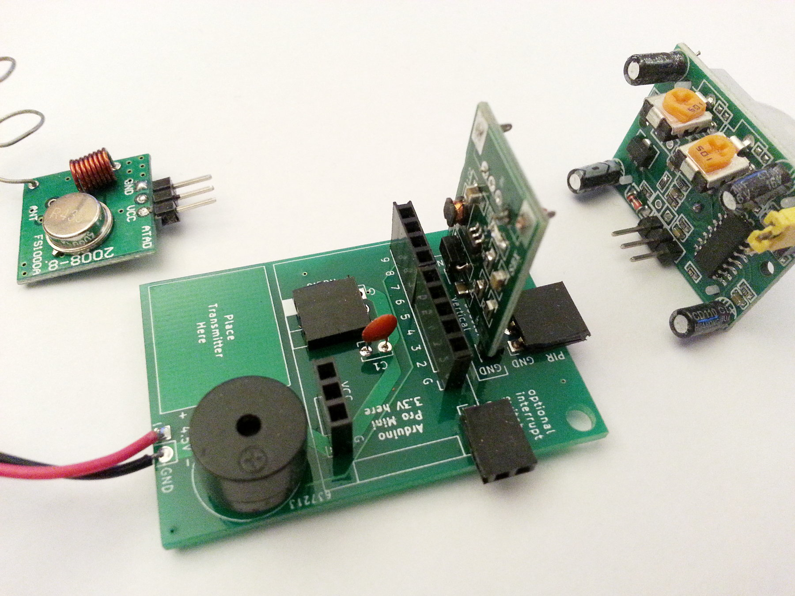
Wir beginnen mit der Grund-Leiterplatte. Nehmen Sie eine der kleineren grünen Leiterplatten aus der Packung. Sie ist mit "Tripwire TX Node" in der linken oberen Ecke der Vorderseite beschriftet. Das Ergebnis wird in etwa so aussehen:
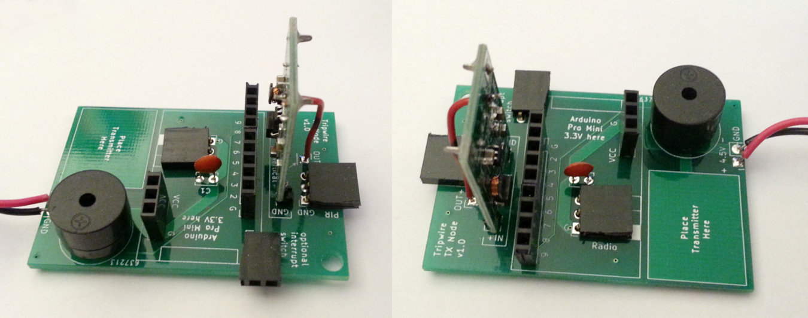
Ohne aufgelötete Komponenten sieht das so aus: Die folgenden Bilder zeigen die original Leiterplatte, in der Mitte nur die Bedruckungen und rechts eine schematische Ansicht, die die Lötstellen hervorhebt.
TODO: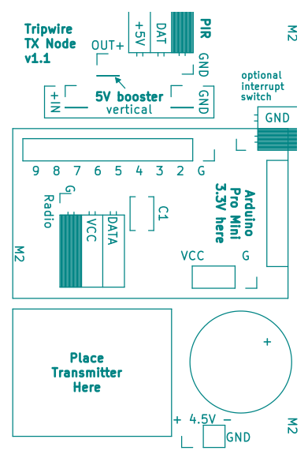
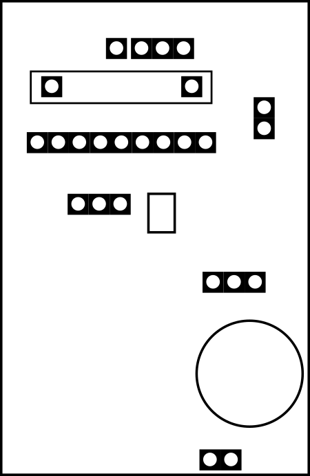
Als erstes werden wir die Buchsenleisten auflöten. Nehmen Sie aus der Packung:
- 1x 2er Buchsenleiste
- 1x 3er Buchsenleiste
- 2x 3er Buchsenleiste abgewinkelt 90°
- 1x 9er Buchsenleiste
und platzieren Sie sie an den markierten Stellen auf der Leiterplatte.
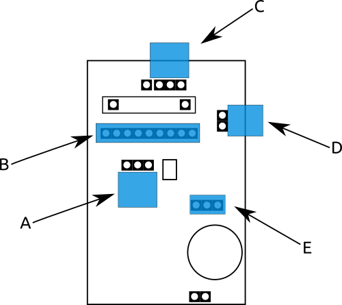
A = eine 3er Buchsenleiste mit abgewinkelten Beinchen. B = eine 9er Buchsenleiste mit geraden Beinchen. C = ebenfalls, eine 3er Buchsenleiste mit abgewinkelten Beinchen. D = eine 2er Buchsenleiste mit abgewinkelten Beinchen E = eine 3er vertikale Buchsenleiste (gerade Beinchen)
Achten Sie beim Anlöten der vertikalen Buchsenleiste B und E darauf, dass Sie sie gerade ausrichten. Hier wird später der Arduino Pro Mini kompatible Mikrokontroller eingesetzt und der Abstand der Buchsenleisten sollte möglichst gut zum Abstand der Stiftleisten an der Mikrokontroller-Platine passen. Wenn Stifleisten oder Buchsenleisten schief stehen, passen die Komponenten nicht aufeinander.
Info
Der TX Node Funk-Sensorknoten ist ausgelegt um primär als Bewegungsmelder zu arbeiten. Es ist aber möglich, eine weitere Funktion, einen weiteren Auslöser, zu verwenden. An den zwei Lötkontakten mit der Beschriftung "optional interrupt switch" können Sie einen NC ("normally closed") Schalter verbinden. Beim Einschalten des Sensors wird von der Standard-Firmware überprüft, ob diese beiden Kontakte eine Verbindung haben - ein Schalter o.ä. eben dafür sorgt, dass dieser Kontakt verbunden ist. Wenn ja, dann wird die Firmware einen Interrupt auch für diesen Kontakt überwachen, und immer dann, wenn diese Verbindung unterbrochen wird, eine Alarmmeldung absetzen. Gängige Magnetschalter ("Reed Swtiches), wie man sie an Fenstern oder Türen anbringen kann sind i.d.R. NC-Swiches ("normally closed"), d.h. wenn ein Magnet in der Nähe ist - ein Fenster oder eine Tür geschlossen ist - ist der Reed Schalter geschlossen und ein Strom kann fließen. Wird der Magnet entfernt, öffnet sich der Schalter und der Kontakt wird unterbrochen.
Das Anbringen der Buchsenleiste D ist optional und kann ausgelassen werden, wenn Sie keinen Steckkontakt an den Lötstellen für den optionalen NC Unterbrecherschalter haben wollen.
Buzzer und Kondensator#
Auf der Platine des TX Node sitzt ein Miniaturlautsprecher, ein Summer oder englisch "Buzzer" (in der Packung ist entweder ein magnetisch oder piezokeramisch angetriebener Summer. Dieser Unterschied ist für den Aufbau aber nicht relevant). Hier entstehen die Piep- und Warntöne. Eine weitere Komponente, die wir in diesem Schritt verbauen, ist ein Keramikkondensator (auch "Kerko" genannt) mit 0.1 uF. Er dient der Filterung der Spannungsversorgung des Sendemoduls.
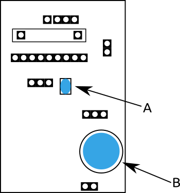
Platzieren Sie einen der Keramikondensatoren aus der Packung an der mit "A" in der Grafik gekennzeichneten Stelle und löten Sie Ihn fest. Die Polung/ Ausrichtung ist bei keramischen Kondensatoren irrelevant, es ist also egal welches Bein in welches Loch kommt. Fädeln Sie ihn einfach mit seinen Drahtbeinchen durch die Lötaugen der Platine. Ziehen Sie den Kondensator ruhig nah an die Oberfläche der Leiterplatte. Eventuell können Sie den Beinchendraht auf der anderen Seite der Leiterplatte, zur Befestigung und Erleichterung des Lötens, leicht nach außen biegen. Löten Sie den Kerko dann fest.
Info
Wenn Sie Komponenten mit langen Drahtbeinen durch die Lötaugen stecken, Komponenten wie diesen Keramikkondensator, dann wird auf der Rückseite der Leiterplatte, nach dem Einfädeln und Anlöten, einiges an Draht überstehen. Sie können diese Überstände mit einer kleinen Kneifzange etwa 1-2mm über der Lötstelle abzwicken.
Nehmen Sie einen der kleinen runden/ zylindrischen Buzzer aus der Packung und stecken Sie ihn so in die Platine, dass das mit "+" (plus) gekennzeichnete Beinchen in das entsprechend gekennzeichnete Beinchen auf der Platine gesteckt ist. Beachten Sie, dass die Beschriftung auf der Unterseite des Buzzers entscheidend ist! Die Oberseite (den Beinchen abgewandt) ist die schwarze Plastikhülle, die manchmal leicht verdreht ist, und wenn dort ebenfalls eine Plus-Markierung ist, ist sie vermutlich an der falschen Stelle.
Der Spannungswandler#
Nehmen Sie die kleine Platine des Spannungswandlers aus der Packung. Es handelt sich um einen Gleichstromwandler, der die Spannung herauf wandelt, einen DC (Gleichspannungs) Ste-Up (herauf) "Booster" (Wandler). Die kleine Platine wird üblicher Weise in USB Power-Bars verbaut. Aus einer Batterie mit einer Spannung von unter 5V erzeugt das Modul eine gleichmäßige Spannung von 5V, bis die Batterie erschöpft ist. Hier wird der Wandler den Bewegungsmelder des TX Node mit Strom versorgen.
Der Spannungswandler wird an der in der Grafik gekennzeichneten Stelle vertikal, also senkrecht, im 90 Grad Winkel zur Hauptplatine des TX Node, auf die Platine montiert:
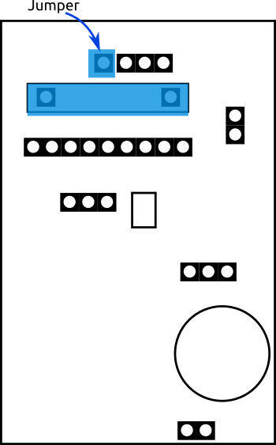
Wazu dient der Spannungswandler?
Der PIR Bewegungsmelder vom Typ SR501 arbeitet intern mit 3.3V. Das PIR-Modul erwartet eine 5V Eingangsspannung, regelt diese aber dann auf die Betriebsspannung von 3.3V mit einem eigenen Spannungswandler herunter. Das Design des TX Node sieht vor, dass wir einen zusätzlichen Spannungswandler installieren, mit dem wir die 3.3V Betriebsspannung des Arduino Pro Mini auf 5V heraufregeln ("boosten", "step-up" Wandlung) werden. Wir regeln also Spannung herauf, nur damit sie dann wieder im PIR-Modul herab geregelt wird? Aber warum?
Die Antwort liegt in der Empfindlichkeit des PIR-Sensors. Der Bewegungsmelder reagiert auf kleinste Veränderungen in seinem Infrarot-Sichtfeld. Diese Änderungen generieren kleine Spannungsschwankungen, die der Sensor als Impuls zur Auslösung betrachtet. Um diese kleinen Schwankungen sicher zu detektieren ist eine sehr gleichmäßige und störungsfreie Spannungsversorgung nötig.
Es wäre möglich, den Sensor ohne das Auf und Ab der Spannungswandlung direkt mit im Stromkreis des Mikrokontrollers zu betrieben. Jedoch generiert das Pro Mini immer wieder Rauschen im Stromkreis. Zudem schwank in den verschiedenen Betriebsmodi der Strombedarf beträchtlich. Diese Schwankungen und Störungen würden zu Fehlauslösungen führen. Die Spannungswandler dienen hier als effektive Filter. Der speziell für den Sensor zunächst herauf geregelte und dann wieder herab geregelte Strom ist sehr gleichmäßig und versorgt den Sensor auf sichere Weise.
Kleine Vorbereitungen
Bevor Sie das Modul auf der TX Node Platine verlöten können, ist etwas Vorarbeit nötig. Wir müssen das Modul vertikal montieren - daher benötigt die Platine zwei Stifte, um 90 Grad gedreht, an den Kontakten auf der Eingangsseite der Wandlerplatine.
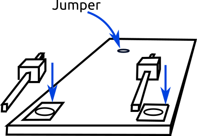
Nehmen Sie zwei einzelne Stifte und platzieren Sie sie zum Anlöten plan auf die Kontakte. Es ist etwas Fingerspitzengefühl nötig, um die Stifte gerade und korrekt zu platzieren. Eine Hile ist es, eine noch unverwendete Buchsenleiste als Halterung zu verwenden, Stecken Sie die Stifte mit den längeren Enden in die Buchsenleiste. lassen Sie dabei zwischen den Stiften den gleichen Abstand wie er später auf der TX Node Platine sein wird: 4 Löcher. Löten Sie die Stifte an.
Wenn die Wandlerplatine später hochkant auf der TX Node Platine stehen wird, dann wird der Spannungsausgang oben, ca 2cm über der Oberfläche der TX Node Platine liegen. Wir verwenden daher einen kleinen Jumper-Draht, um die Ausganskontakte wieder zurück auf die Platine zu verbinden.
Info
Bei der Spannungswandlung werden die Masseseiten der Stromkreise mit den unterschiedlichen Spannungen miteinander verbunden. Auf der Eingangsseite haben wir den Masse (Ground, GND) Kontakt und den VCC (Pluspol). Auf der Ausgangsseite nutzen wird nur den Pluspol. Was ist mit dem Masse-Ausgang? Es scheint nur so, als sei der Spannungswandler nur mit drei Kontakten angeschlossen. Der Massekontakt ist auf der Wandlerplatine selbst nicht sichtbar durchverbunden. Daher können wir den Massekontakt auslassen.
Bereiten Sie den kleinen Jumper-Draht vor und löten Sie ihn in in das linke Loch der vier Lötstellen auf der Eingangsseite - so dass er auf der selben Seite wie die gerade angelöteten Stiftkontakte herausragt.
Entfernen der Power LED
Info
Es macht Sinn, diesen Arbeitsschritt erst nach der grundlegenden Funktionsprüfung durchzuführen. Die LED gibt Ihnen Aufschluss darüber, ob das Modul korrekt mit Strom versorgt wird, es grundlegend funktioniert.
Das kleine vorgefertigte Spannungswandler-Modul besitzt eine "Power LED", die normaler Weise anzeigen soll, wenn das Modul mit Strom versorgt ist, es also "in Betrieb" ist. Der TX Node Sensor soll über viele Wochen arbeiten und muss daher möglichst wenig Strom verbrauchen. Auch eine so kleine LED verbraucht Strom und wir müssen sie daher entfernen.
Die Power-LED ist ein SMD Bauteil (Surface-mounted device), also sehr klein. Benutzen Sie entweder eine kleine Kneifzange, um die LED einfach zu zerstören oder hebeln sie sie mit der Spitze eines Cutter-Messers mit kleiner Gewalt von der Oberfläche des Moduls. Es ist auch möglich, die ganze LED mit dem Lötkolben zu erhitzen und dann mittels der kapillaren Kraft des Lötzinns an der Spitze des Lötkolbens nach Verflüssigen der LED-Lötkontakte von der Oberfläche zu heben.
Anlöten des Spannungswandlers
Stellen Sie jetzt den Spannnungswandler vertikal auf die Hauptplatine, so dass die Seite mit den Komponenten in Richtung der längeren Seite der Hauptplatine (nach hinten) weist. Die gerade angelöteten Stifte in die Lötaugen - mit der korrekten Polung, GND and Masse und "+IN" an den Pluspol. Fädeln Sie auch den kleinen Jumperdraht direkt ein. Verlöten Sie dann die drei Kontakte.
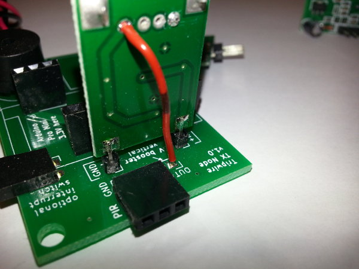
Anschluss des Batteriefachs#
Der TX Node Sensorknoten ist batteriebetrieben. In der Packung finden sie mehrere Batteriefächer, die jeweils drei AA Alkaline Batterien aufnehmen und den Sensor über viele Wochen mit Strom versorgen können.
Die Anschlüsse für die Kabel des Batteriefaches befinden sich im "hinteren" Teil der TX Node Hauptplatine. Sie sind in der Grafik blau markiert. Fädeln Sie die Kabel des Batteriefaches gemäß der Polung in die Lötaugen (Pluspol, "+", rotes Kabel und schwarzes Kabel an "-" bzw. "GND"),
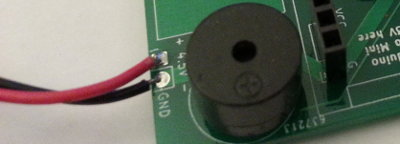
Anlöten der Stiftleisten an den Mikrokontroller#
Nehmen Sie eines der Pro Mini Module zur Hand. Wir werden jetzt Stiftleisten an die Kontakte des Mikrokontrollers löten. Normaler Weise belegt man zum experimentieren mit derartigen Mikrokontrollern alle Kontakte - hier werden wir nur die benötigten Stifte anlöten.
Schauen Sie sich die hier in der Anleitung vorhandenen Bilder an. Achten Sie darauf, die Platine des Moduls richtig herum mit Stiften zu versehen, d.h. die Stifte müssen auf der Seite abstehen, auf der nicht der rautenförmige schwarze Chip (ATmega 328) aufgebracht ist.
Info
Wenn Sie später alle Kontakte mit Stiftkontakten belegen wollen, so ist das leicht nachträglich möglich. Damit sich das Pro Mini Modul aber in die Buchsenleisten des TX Node Sensors setzen lässt, brauchen wir hier eine "Lücke" in den Stiftleisten - unter den Analogkontakten (dort wird das Sendemodul sitzen) und unter den seriellen Kontakten des Pro Mini (dort ist optional der Steckkontakt für einen Unterbrecherschalter aufgelötet)
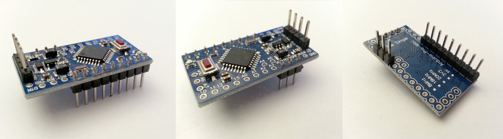
Löten Sie zunächst die 4 Stifte des "Programming-Interface" an. Das sind die vier Kontakte, über die eine Verbindung mit dem ATMega 328 auf dem pro Mini hergestellt wird. Es handelt sich um die Kontakte Masse (GND), VCC (Pluspol, Spannung) und seriell TX und RX. Auf den Bildern sind das die vier Stifte, die auf der Oberseite montiert sind. Sie können gerade Stifte wie abgebildet verwenden, oder rechtwinklig abgewinkelte - ganz wie Sie wollen. Die Stifte sind auf der Oberseite, damit man auch wenn das Pro Mini in die Buchsen auf der Hauptplatine des TX Node eingesteckt sind, die Stifte des Programming-Interface leicht erreichen kann.
Info
Anders als andere Arduino-kompatible Mikrokontroller besitzt das Pro Mini keine USB-Schnittstelle - weil kein USB-zu-Serial Wandlerchip verbaut ist. Es ist also nicht nur mit einem Kabel an einen PC anzuschließen. Man benötigt zum Programmieren einen seriellen Adapter, üblicher sind hier USB-zu-TTL serielle Adapter.
Wenn Sie die vier Stifte auf der Oberseite angelötet haben, drehen Sie das Pro Mini um und löten Sie die übrigen Stifte an. Nehmen Sie dazu eine 9er Stifteleiste und löten Sie sie auf die Kontakte 9-8-7-6-5-4-3-2-1-GND auf der einen Seite des Pro Mini Moduls.
Nehmen Sie dann eine 3er Stiftleiste und löten Sie sie auf die Kontakte GND-RST-VCC auf der gegenüberliegenden Seite. Übrigens wird der RST Kontakt auf der Platine nicht verbunden sein - er wird hier nur der Einfachheit halber mit angebracht.
Info
Es ist wichtig, dass Sie die Stifte gerade ausrichten und festlöten, damit das Modul später gut in die Buchsenleiste der Hauptplatine gepresst werden kann. Da wir im vorherigen Schritt bereits die Buchsenleisten auf der TX Node Hauptplatine installiert haben, könne Sie die Stifte einfach schon einstecken, mit den langen Enden zuerst. Legen bzw. stecken Sie dann das noch unverlötete Pro Mini auf die gerade eingesteckten Stifte. Auf diese Weise fixieren Sie die Stifte beim Löten genau in der richtigen Position.
Info
Ein anderer Trick um ein gutes Ergebnis zu erzielen und die Stifte möglichst gerade auszurichten, ist die Stiftleisten in ein "Breadboard" (eines dieser farbigen, meist weißen, Prototyping-Boards, wie sie es vermutlich aus einem Arduino Experiementierkasten bereits besitzen) zu stecken. Wenn Sie dann die Platine des Pro Mini Moduls auf die Stifte legen und die Kontakte verlöten, sind im Ergebnis die Stifte schön gerade ausgerichtet. Und wenn Ihnen ein ebenso gerade Ergebnis mit den Buchsen gelungen ist, werden die Stifte gut passen.
Entfernen der Power-LED des Pro Mini Moduls#
Wie auch der Spannungswandler besitzt das Arduino-kompatible Pro Mini Modul eine "Power LED", die normaler Weise anzeigen soll, wenn das Modul mit Strom versorgt ist, es also "in Betrieb" ist. Der TX Node Sensor soll über viele Wochen arbeiten und muss daher möglichst wenig Strom verbrauchen. Auch eine so kleine LED verbraucht Strom und wir müssen (oder sollten) sie daher entfernen.
Die Power-LED ist ein SMD Bauteil (Surface-mounted device), also sehr klein. Benutzen Sie entweder eine kleine Kneifzange, um die LED einfach zu zerstören oder hebeln sie sie mit der Spitze eines Cutter-Messers mit kleiner Gewalt von der Oberfläche des Moduls. Es ist auch möglich, die ganze LED mit dem Lötkolben zu erhitzen und dann mittels der kapillaren Kraft des Lötzinns an der Spitze des Lötkolbens nach Verflüssigen der LED-Lötkontakte von der Oberfläche zu heben.
Aufspielen der Firmware#
Nutzen Sie nun einen USB-zu-TTL seriellen Adapter, um den Mikrokontroller mit dem Computer zu verbinden. Beginnen Sie mit dem Massekontakt. Verbinden Sie GND mit GRD. Beachten Sie, dass das Modul mit 3.3V betrieben wird. Stecken Sie also, falls Ihr Adapter 3V und 5V Anschlüsse hat, das Kabel für die Stromversorgung auf den 3V Anschluss und die andere Seite auf den mit VCC beschrifteten Kontakt des Mikrokontrollerboards. Verbinden Sie TX mit RX und RX mit TX.
Stecken Sie den seriellen Adapter in einen freien USB Steckplatz Ihres Computers. Stellen Sie sicher, dass der Adapter korrekt erkannt wird. Installieren Sie, wenn nötigt, erforderliche Treiber.
Firmware Download
Die Software, die Ihr TX Node zum Laufen braucht erhalten Sie, wie auch dieses Handbuch hier, im Internet auf der Entwicklerplattform github. Besuchen Sie also die github Seite Ihres Tripwire Baukastens.
https://github.com/DIY-Home-Security/
Klonen Sie das Projektarchiv des TX Node oder laden sie ein ZIP-Archiv herunter:
https://github.com/DIY-Home-Security/Tripwire-TX-Node
Arduino IDE
Installieren und starten Sie die Arduino IDE. Die Software erhalten Sie auf der Seite des Arduino-Projektes:
https://www.arduino.cc/en/Main/Software
Installationsanleitungen für Ihr System sowie Hilftexte zur Einführung in die Arbeit mit der IDE finden Sie unter:
https://www.arduino.cc/en/Guide/HomePage
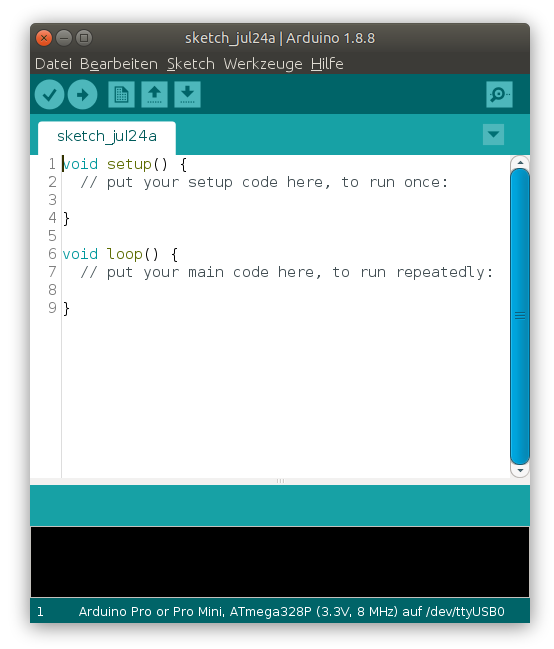
Wählen Sie das korrekte Modul im "Board"-Menu der IDE. Gehen Sie dazu in das Drop-Down-Menu "Werkzeuge" > "Board" und wählen Sie "Arduino Pro or Pro Mini".
Wählen Sie den korrekten Prozessor "Prozessor"-Menu der IDE. Gehen Sie dazu in das Drop-Down-Menu "Werkzeuge" > "Prozessor" und wählen Sie "ATmega328P (3.3V 8MHz)".
Stellen Sie sicher, dass Ihr USB-zu-TTL Adapter unter "Werkzeuge" > "Port" angezeigt wird und ausgewählt ist.
Öffnen Sie das Firmware-Programm für den TX Node Sensorknoten. In der Arduino IDE werden die Skripte bzw. Programme "Sketch" genannt. Wählen Sie "Datei" > "Öffnen".
Im Quelltext der Software/Firmware für den Sensorknoten können Sie vor dem Hochladen des Sketches auf den Mikrokontroller ("Brennen") festlegen, welche Nummer (ID) dieser TX Node Sensor haben soll. Wenn das Programm unverändert ist, ist hier die "1" vergeben.
Info
Sie werden diese Hochlade-Prozedur für alle drei im Baukasten enthaltenen TX Nodes wiederholen. Vor nachfolgenden Hochlade-Vorgängen müssen Sie also die dem TX Node vergebene Nummer ändern. Es sind Nummern von 1 bis 16 möglich, sie können also 16 Sensorknoten innerhalb eines Tripwire-Systems betreiben. Der Wert für die ID des Sensors wird angegeben mit 1000 multipliziert, also "1000" für "1", "2000" für "2", etc. Im Quellcode wird der Wert in der Konstante "nodeId" hinterlegt.
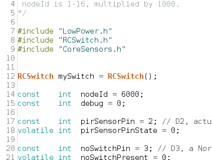
Wählen Sie "Sketch" > "Hochladen" aus dem Drop-Down-Menü (oder drücken Sie das Icon in der Werkzeugleiste der IDE, Tastaturkürzel STRG-U).
Legen Sie einen Finger auf den RESET-Taster in der Mitte des Pro-Mini Moduls und halten Sie den Taster heruntergedrückt bis im unteren schwarzen Fenster der Arduino IDE nach dem Kompilieren des Codes mit einem Mal viel Text erscheint. Lassen Sie den Taster dann los. Der Hochlade-Vorgang sollte beginnen.
Info
Anders als andere Arduino-kompatible Module (mit USB Anschluss) besitzen Pro Mini-kompatible Module (welche nur einen seriellen Anschluss haben) keinen softwareseitig auslösbaren Reset-Mechanismus. Der Mikrokontroller erwartet neue Software immer kurz nach dem Start. Daher muss ein Reset von Hand ausgelöst werden - genau in dem Moment, wenn die Arduino IDE bereit zum Übertragen ist. Mit etwas Übung bekommt man den richtigen Moment dafür gut hin.
Einstellen des TX Node SR501 Bewegungsmelders#
Der im Sensorknoten TX Node eingesetzte Bewegungsmelder vom Typ SR-501 ist ein passiv arbeitender Infrarotsensor (PIR). Bei Auslösung durch Infrarotstrahlung funktioniert er wie ein Schalter, der im Fall dieses Typs ein Signal ausgibt.
Wie empfindlich der Sensor arbeitet und wie lange er das Meldesignal ausgibt kann mittels zwei kleiner Potentiometer Einstellschrauben auf der Oberseite des Sensors eingestellt werden. Wählen Sie hier einen mittleren Wert für die Empfindlichkeit ("Sensitivity") und etwa 2 Sekunden Dauer für die Ausgabe des Impulses ("Time" oder Intervall). In der Regel sind diese Werte bereits vom Hersteller eingestellt.
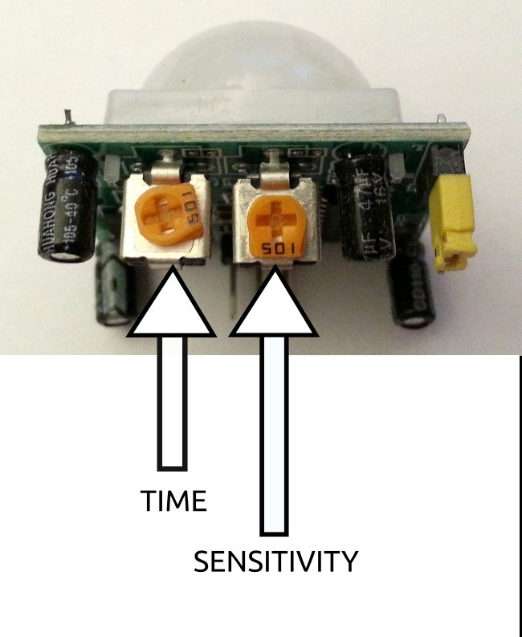
Debug-Interface des Funk-Sensors TX Node#
Mit der Standard Firmware gibt das Pro Mini über seine seriellen Pins keine Debug-Informationen aus. Das dient der Reduktion von Rauschen in der Spannungsversorgung des Moduls und soll Fehlalarme verhindern.
Möchten Sie Debug-Information auslesen, so müssen Sie also zunächst die Ausgabe von Debug-Informationen einschalten. Dazu müssen Sie eine leicht veränderte Firmware aufspielen, in der sie die debug Variable im Kopfteil des Sketches auf "1" setzen. Wenn das geschehen ist, ist der serielle Port auf 115200 Baud eingestellt und kann z.B. mit dem in die Arduino IDE eingebauten seriellen Monitor mitgelesen werden. Zum Anschluss des TX Node Pro Mini an Ihren Computer benötigen Sie einen USB auf TTL Serial-Adapter. Benutzen Sie die selben Anschlüsse, über die Sie bereits die Firmware aufgespielt haben.
Verbinden Sie den Masseanschluss des Adapters mit dem Massepin des Pro Mini-kompatiblen Moduls. Verbinden Sie den mit TX beschrifteten Pin des USB-Adapters mit dem mit RX beschrifteten Pin des Pro Mini. Verbinden Sie den mit RX beschrifteten Pin des USB-Adapters mit dem mit TX beschrifteten Pin des Pro Mini. Verbinden Sie zuletzt den VCC Pin mit dem 3.3V Pin des Adapters.
Aufbau der Basisstation RX Base#
Auflöten der Buchsenleisten#
Nehmen Sie entsprechend der Pin-Anzahl vier Buchsenleiten aus der Verpackung:
- 1x 5-pin Buchsenleiste
- 2x 8-pin Buchsenleiste
- 1x 2-pin Buchsenleiste
Plazieren Sie die Buchsenleiste möglichst senkrecht auf der Leiterplatte und löten Sie sie an den angegebenen Stellen an.
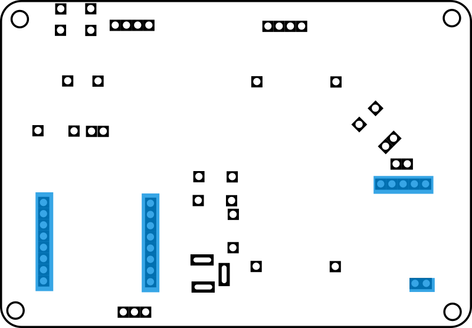
Auflöten der Widerstände#
Nehmen Sie die Widerstände aus der Packung. Es sind nur drei verschiedene Widerstände in der Packung.
- 1x 220 Ohm Farbcode: TODO
- 2x 1 kOhm (=1000 Ohm) Farbcode: TODO
- 1x 5.6 kOhm (=5600 Ohm) Farbcode: TODO
Online gibt es diverse Rechner, die Ihnen helfen einen Widerstand anhand der Farbringe zu identifizieren, zB. der Widerstandsfarbcodekonverter für 4 Ringe
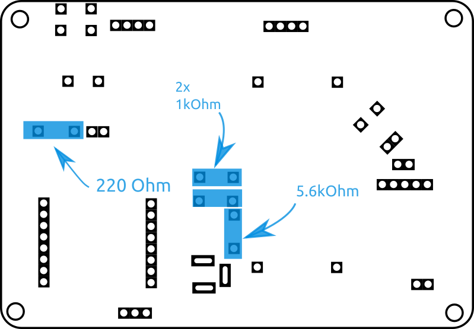
Fädeln Sie die Widerstände mit ihren Drahtbeinchen durch die Lötaugen der Platine. Die Polung ist bei diesen Bauteilen nicht relevant. Ziehen Sie die Widerstände ruhig nah an die Oberfläche der Leiterplatte. Eventuell können Sie den Draht auf der anderen Seite der Leiterplatte, zur Befestigung und Erleichterung des Lötens, leicht nach außen biegen. Löten Sie dann die Widerstände fest.
Info
Wenn Sie Komponenten mit langen Drahtbeinen durch die Lötaugen stecken, Komponenten wie diese Widerstände, dann wird auf der Rückseite der Leiterplatte, nach dem Einfädeln und Anlöten, einiges an Draht überstehen. Sie können diese Überstände mit einer kleinen Kneifzange etwa 1-2mm über der Lötstelle abzwicken.
Auflöten der LED und des Buzzers#
Neben dem Vorwiderstand im linken Bereich der Hauptplatine ist die Installation einer Signal-LED vorgesehen. Nehmen Sie die LED aus der Packung und sehen Sie sie sich an: eines der Beinchen ist kürzer, und auf dieser Seite ist das Plastikgehäuse der LED an einer Stelle abgeflacht. Diese Seite ist die negative Seite und kommt auf die dem Widerstand abgewandte Seite, von oben betrachtet also die rechte Seite. Auf der Leiterplatte ist auf dieser Seite der Hinweistext "flat edge, short leg".
Nehmen Sie einen der kleinen runden/ zylindrischen Buzzer aus der Packung und stecken Sie ihn so in die Platine, dass das mit "+" (plus) gekennzeichnete Beinchen in das entsprechend gekennzeichnete Beinchen auf der Platine gesteckt ist. Beachten Sie, dass die Beschriftung auf der Unterseite des Buzzers entscheidend ist! Die Oberseite (den Beinchen abgewandt) ist die schwarze Plastikhülle, die manchmal leicht verdreht ist, und wenn dort ebenfalls eine Plus-Markierung ist, ist sie vermutlich an der falschen Stelle.
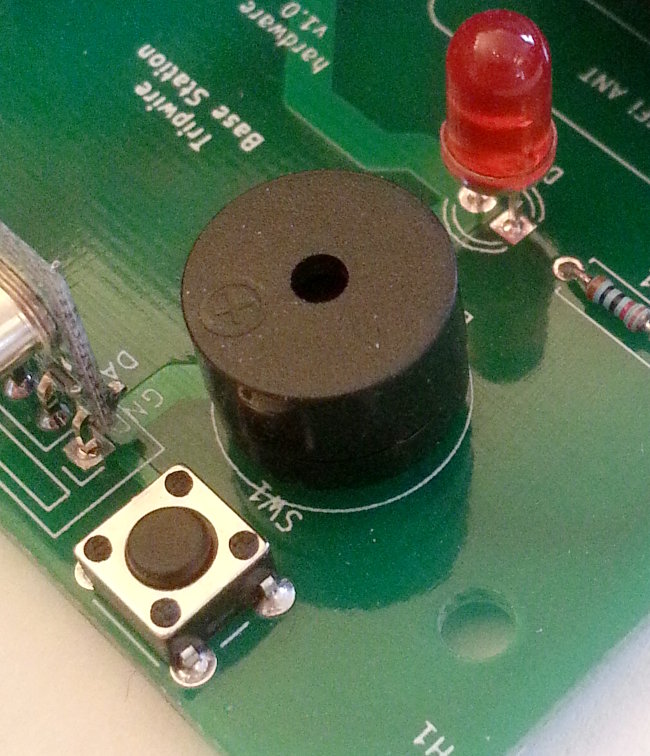
Auflöten des Mikroschalters#
Im oberen linken Eckbereich der Hauptplatine ist die Installation eines kleinen Mikroschalters bzw. Tastschalters vorgesehen.
Beachten Sie, dass der Mikroschalter nicht ganz seitengleich ist. Die obere und untere Seite des kleinen Vierecks ist leicht länger als die Seiten. Setzen Sie den Schalter so ein, dass die kurzen Seiten nach links und rechts der Hauptplatine weisen. Die kleinen Beinchen sollten ohne Gewalt in die Lötaugen passen.
Auflöten der Netzteil-Buchse#
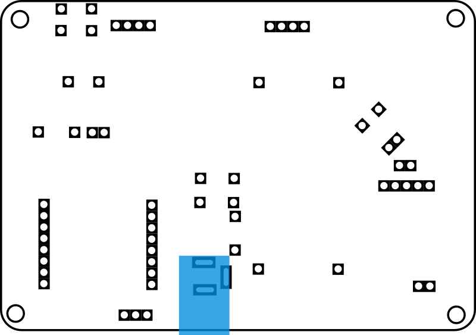
Die Position der Buchse für das Stromanschlusskabel des Netzteils ist leicht anhand der größeren Lötaugen zu erkennen. Verwenden Sie beim Anlöten der Buchse ausreichend Lötzinn.
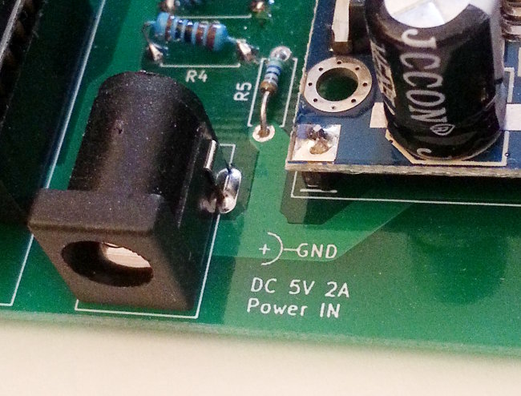
Auflöten des Spannungswandlers#
In folgender Grafik ist die zukünftige Position des Spannungswandlers gezeigt. Nehmen Sie die Modulplatine des LM2596 Spannungswandlers aus der Packung. Es ist das relativ große Bauteil, mit Kondensatoren und einem blauen Kästchen.
Vorbereiten des Spannungswandlers
Vier Stiftkontakte werden vor dem Anlöten des Spannungswandlers in jede Ecke der Spannungswandlerplatine eingesteckt, als Abstandshalter und Einfädelhilfe. Verlöten Sie sie noch nicht, sondern platzieren Sie den Spannungswandler mit losen Stiften auf der Hauptplatine. Erst dann verlöten Sie die Ecklötstellen. Drehen Sie dann die Hauptplatine und löten Sie von unten die Stiftkontakte in der Hauptplatine fest.
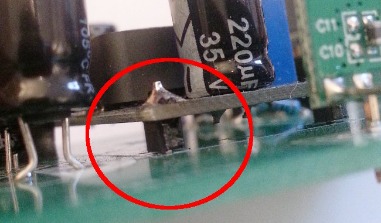
Einstellen des Spannungswandler-Moduls LM2596S#
Das Spannungsregler-Modul LM2596 muss vor der Inbetriebnahme / dem Einsetzen des GSM-Modems auf eine für das GSM-Modem geeignete Spannung eingestellt werden. Gemäß den Hinweisen im Hardware Design Guide für das SIM 800L Modul (S.20, Absatz 4.1) akzeptiert das GSM-Modem eine Spannung von 3,4 bis 4,4 V. Wir werden das Spannungswandler-Modul auf 3.80 Volt einstellen.
Nehmen Sie Ihr Digitales-Multimeter, stellen es ein auf die Funktion zur Messung von Stromspannungen im Bereich bis 20V (Symbol V⎓ und die Zahl "20") und schließen Sie die Prüfspitzen an den Ausgang des LM2596 Moduls an.
Info
Sollten Sie das Spannungswandler-Modul bereits auf die Basis-Platine gelötet haben, dann können Sie einfach das mitgelieferte Netzteil anschließen um das Spannungswandler-Modul mit Strom zu versorgen. Wenn nicht, so müssen Sie z.B. mit einem Tischnetzgerät für eine kleine Eingangsspannung sorgen, vorzugsweise von 5V Gleichstrom.
Schließen Sie dann das Netzteil an indem Sie das Kabel mit dem Rundstecker in die Netzteilbuchse stecken und stecken Sie dann das Netzteil selbst in eine 240V Wechselstrom-Steckdose.
Kontrollieren Sie die Anzeige Ihres Multimeters. Welche Spannung in Volt zeigt es an?
Der Spannungswandler besitzt ein Präzisions-Drehpotentiometer zur Einstellung der Ausgangsspannung. Nehmen Sie einen kleinen Schlitzschraubendreher und drehen sie die kleine goldfarbene Schraube auf dem blauen Kästchen des Spannungswandlermoduls gegen den Uhrzeigersinn bis das Voltmeter eine Spannung von 3,80V anzeigt.
Der Spannungswandler ist nun für den Betrieb des GSM-Modems eingestellt.
Auflöten der Kondensatoren#
In der Stromzufuhr des GSM-Modems befinden sich drei Elektrolytkondensatoren (auch "Elkos" genannt) als Puffer, um Schwankungen in der Stromversorgung des Modems auszugleichen.
Warnung
Beachten Sie unbedingt die Polung der Kondensatoren! Der "helle" Pol des Kondensators muss mit dem Minuspol, und der "dunkle" Pluspol muss mit dem Pluspol, der Markierung "+" auf der Platine übereinstimmen! Der negative Pol des Kondensators ist mit einem hellen Strich gekennzeichnet auf dem ein stilisiertes "-" (minus) aufgedruckt ist. Sind die Beine unterschiedlich lang, so markiert das kürzere Bein den Minuspol. (Manchmal sind diese Farbgebungen genau umgekehrt, aber ein Strich oder zumindest das "-"-Minuszeichen markiert den Minuspol).
Nehmen Sie die drei Kondensatoren zur Hand. Der negative Pol des Kondensators ist mit einem hellen Strich gekennzeichnet auf dem ein stilisiertes "-" aufgedruckt ist. Es ist die Seite mit dem kürzeren Bein. Platzieren Sie die Kondensatoren sie der Größe nach auf der Platine und löten Sie die Beinchen fest. Die Positionen sind mit Kreisen gekennzeichnet. Die eine Hälfte dieser Kreise ist weiß ausgefüllt. Hier muss das negative Beinchen eingesteckt werden.
Anlöten des RXB6 Funkempfängers#
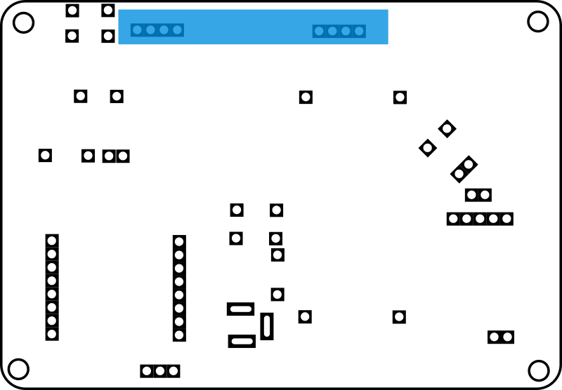
Wir werden das RXB6 Superheterodyne Funkempfängermodul vertikal im oberen Bereich der Hautplatine der RX Base Basisstation anbringen. Vorher müssen wir allerdings die Antenne anlöten und dazu bedarf es einer kleinen Vorarbeit.
Vorbereiten des RXB6 Moduls
Erhitzen Sie den Stiftkontakt der mit "Ant" markiert ist und ziehen Sie mit einer Zange den Stiftkontakt heraus. Wir werden nun an dieser Stelle, um 90 Grad gedreht, eine Drahtantenne einlöten.
Nehmen Sie einen der vorbereiteten Drähte aus der Packung. Entsprechend einem Viertel der Wellenlänge von 433MHz ist der Draht genau 17,3cm lang. Stecken Sie ihn auf der Seite des RXB6 Moduls, auf der Komponenten sind, durch das gerade entlötete Lötauge. Erhitzen Sie, um das zu ermöglichen, eventuell die Lötstelle erneut. Verlöten Sie die Antenne mit dem Modul
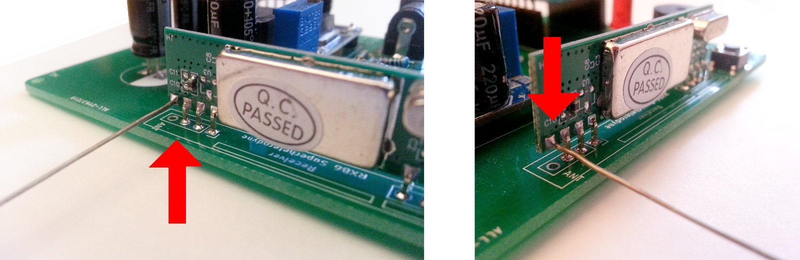
Anlöten des Moduls
Stecken Sie dann das RXB6 Modul durch die 7 Lötaugen an der Oberseite der Hauptplatine - wie auf den Bildern zu sehen - und löten Sie es fest.
Der Aufbau der RX Base Hauptplatine ist damit abgeschlossen:
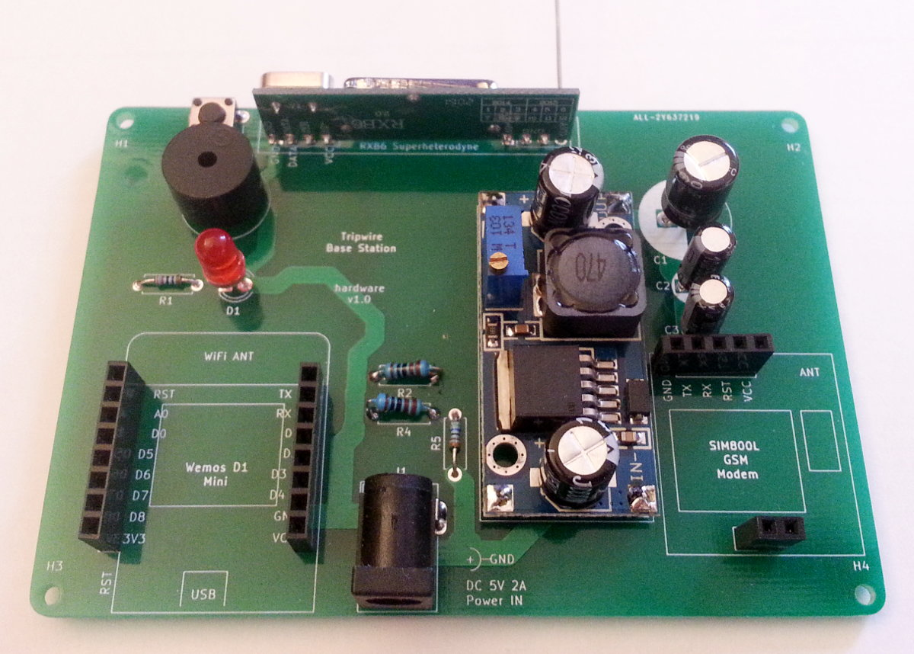
Anlöten der Stiftleisten an das Wemos D1 Mini kompatible Modul#
Nehmen Sie zwei 8er Stiftleisten aus der Verpakcung und löten Sie sie auf beide Seiten des Moduls. Achten Sie darauf, die Platine des Moduls richtig herum mit Stiften zu versehen, d.h. die Stifte müssen auf der Seite abstehen, auf der nicht der viereckige silberne Kasten des ESP8266 Chips aufgebracht ist. Vergleichen Sie dazu die Fotos in dieser Anleitung.
Info
Es ist wichtig, dass Sie die Stifte gerade ausrichten und festlöten, damit das Modul später gut in die Buchsenleiste der Hauptplatine gepresst werden kann. Da wir im vorherigen Schritt bereits die Buchsenleisten auf der RX Base Hauptplatine installiert haben, könne Sie die Stifte einfach schon einstecken, mit den langen Enden zuerst. Legen bzw. stecken Sie dann das noch unverlötete Wemos D1 Mini kompatible Modul auf die gerade eingesteckten Stifte. Auf diese Weise fixieren Sie die Stifte beim Löten genau in der richtigen Position.
Tipp
Ein anderer Trick um ein gutes Ergebnis zu erzielen und die Stifte möglichst gerade auszurichten, ist die Stiftleisten in ein "Breadboard" (eines dieser farbigen, meist weißen, Prototyping-Boards, wie sie es vermutlich aus einem Arduino Experiementierkasten bereits besitzen) zu stecken. Wenn Sie dann die Platine des Pro Mini Moduls auf die Stifte legen und die Kontakte verlöten, sind im Ergebnis die Stifte schön gerade ausgerichtet. Und wenn Ihnen ein ebenso gerade Ergebnis mit den Buchsen gelungen ist, werden die Stifte gut passen.
Anlöten der Stiftleisten an das SIM800L GSM-Modem#
Nehmen Sie passende Stiftleisten aus der Verpackung. Belegen Sie die Seite der Platine, auf der der mit "ANT" beschriftete Antennenanschluss ist mit einer 5er Stiftleiste. Löten Sie auf der gegenüberliegenden Seite ruhig ebenfalls alle sechs Pinne ein - zwar werden wir sie nur zum Halten des Moduls verwenden, aber es ist durchaus sinnvoll und einfacher, die Seite ebenfalls voll mit Pins zu verlöten.
Info
Beachten Sie die Tipps zum geraden Einlöten der Stifte im vorherigen Schritt.
Anstecken der Antenne an das SIM800L GSM-Modem#
Im Baukasten enthalten ist eine kleine PCB-Antenne, die über einen u.Fl Steckkontakt an den Antennenausgang des SIM800L Moduls angeschlossen wird. Das anbringen einer geeigneten Antenne ist für den erfolgreichen Betrieb des GSM-Modems unbedingt erforderlich.
Klicken Sie den kleinen goldenen Steckkontakt des Kabels der Antenne auf den entsprechenden Gegenkontakt auf dem SIM800L Modul. Mit etwas Kraft schnappt der Kontakt plan ein.
Achten Sie darauf, die Antenne etwas entfernt von der Hauptplatine zu platzieren, um Störungen zu vermeiden. Ein guter Platz ist in der ganz oben rechten Ecke über der Hauptplatine, an der keine Bauteile aufgebracht sind.
Wichtig
Das GSM-Modem ist in der Lage, seine Abstrahlintensität zu regeln und wird seine Abstrahlleistung bis auf ein Maximum erhöhen, wenn der Empfang schlecht ist. Betreiben Sie das Modem daher nie ohne eine Antenne angeschlossen zu haben - das Modul könnte sonst Schaden nehmen.
Einsetzen der SIM-Karte (Nicht im Lieferumfang enthalten)#
Das GSM-Modem der Basisstation ist in der Lage eine Verbindung zum GSM-Mobilfunknetz aufzubauen. So ist es möglich, Kurznachrichten und Anrufe an Mobilfunkteilnehmer abzusetzen. Für den Betrieb des GSM-Modems wird eine SIM-Karte eines Mobilfunkanbieters benötigt. Diese ist nicht im Lieferumfang enthalten.
Zwar kann die Anlage kann auch ohne SIM-Karte betrieben werden, jedoch erfolgt dann im Meldefall keine Alarmierung über das Mobilfunknetz!
Wenn Sie eine Prepaid-SIM-Karte verwenden, denken Sie bitte daran, das auf der Karte verfügbare Guthaben regelmäßig zu überprüfen. Außerdem müssen die meisten Prepaid-Karten in bestimmten Zeiträumen kostenpflichtig genutzt werden, sonst werden sie gesperrt. Informieren Sie sich also bei Ihrem Mobilfunkanbieter über diese Modalitäten und etwaige Fristen.
Vor der ersten Nutzung der SIM-Karte muss diese durch Eingabe einer Codenummer (PIN) entsperrt werden. Die Firmware der Basisstation übernimmt diesen Vorgang für Sie, allerdings muss diese Nummer in der Software vor dem Aufspielen (flashen) des Basisstations-Mikrokontrollers eingegeben sein.
Achten Sie darauf, die korrekte PIN zu verwenden. Wenn Sie die PIN 3 mal falsch eingegeben haben, kann die PIN nicht mehr einfach entsperrt werden. Wenden Sie sich in diesem Fall an Ihren Mobilfunkanbieter, um die Sperre aufzuheben. Bei der Fehlersuche im Umgang mit der SIM-Karte kann es hilfreich sein, die SIM-Karte in ein Mobiltelefon einzusetzen und ihre korrekte Funktion zu überprüfen.
Vorbereiten der Arduino IDE#
Bisher haben wir die Arduino IDE genutzt, um einen Programmcode auf eine Arduino-kompatiblen Mikrocontroller aufzuspielen. Jetzt müssen wir die Arduino IDE auf das Verbinden mit einem ESP8266-basierten Microcontroller vorbereiten.
Libraries installieren
Plattform umschalten, Baud zahl einstellen, verbinden über USB (nicht in der Basis eingesteckt! nicht über das netzteil mit Spannung versorg!)
Aufspielen der RX Base Firmware#
Einstecken des Mikrocontrollers und GSM-Modems auf die Hauptplatine#
Nun ist der Wemos D1 Mini kompatible ESP8266 Mikrocontroller mit einer Software ausgestattet und das SIM800L GSM-Modem sollte einsatzbereit sein. Stecken Sie beide Module an die vorgesehenen Plätze.
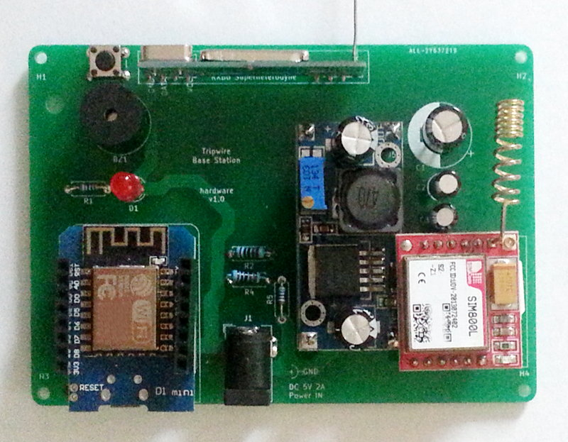
Auf folgendem Bild können Sie sehen, wie die ansonsten elektrisch unverbundene 2-er Buchsenleisten im unteren Bereich des GSM-Moduls nur dazu dient, das Modul auf der Hauptplatine zu befestigen:
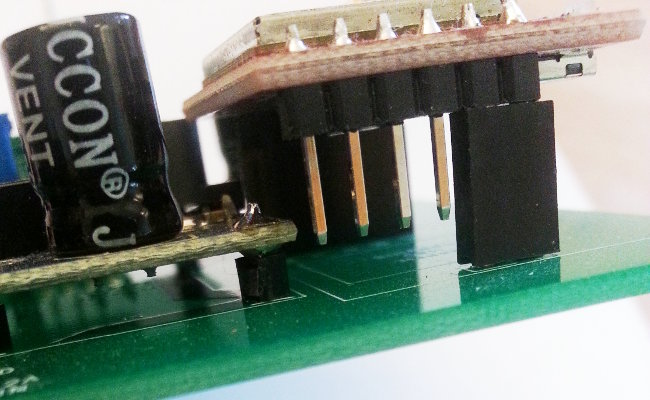
Checkliste nach dem Bau#
Überprüfen Sie diese Schritte noch einmal vor dem ersten Einstecken des Netzteils!
Warnung
Jetzt aber wirklich... Überprüfen Sie diese Schritte noch einmal vor dem ersten Einstecken des Netzteils!
- Wurde der LM2596 Spannungswandler eingestellt? Auf eine Spannung zwischen 3,8 und 4,0 Volt?
- Sind die großen zylindrischen Kondensatoren korrekt gepolt? Vergleichen Sie die Markierungen auf den Kondensatoren mit den Markierungen auf der Leiterplatte.
- Ist die Antenne des SIM800L GSM-Modems eingesteckt?
- Ist der USB-Anschluss des Wemos D1 Mini kompatiblen Modules unbelegt? Steckernetzteil und USB-Anschluss dürfen nie zugleich benutzt werden.
Die Basisstation ist nun einsatzbereit. Lesen Sie jetzt den Abschnitt zum Aufstellen der Sensorknoten und der Basisstation.
Debug-Interface der Basisstation RX Base#
Mit der standard Firmware gibt das Wemos D1 Mini kompatible Modul über seine seriellen Pins Debug-Informationen aus. Standardmäßig ist der serielle Port auf 115200 Baud eingestellt und kann z.B. mit dem in die Arduino IDE eingebauten Seriellen Monitor mitgelesen werden. Zum Anschluss der Basisstation an Ihren Computer benötigen Sie einen USB auf TTL Serial-Adapter. Je nachdem wie Sie Ihre Basisstation aufgebaut bzw. je nachdem wie sie Pins an das Wemos D1 Mini Modul angelötet haben, können Sie entweder die seriellen Anschlüsse des D1 mit Jumper-Stecker-Kabeln anbinden, oder Sie stecken Jumperkabel mit Buchsen auf die drei als Debug-Port optional auflötbaren Pins der Platine der Basistation (zu finden in der Nähe des USB Anschlusses des D1). Schließen sie nie das Netzteil und den USB-Anschluss des Wemos D1 Mini gleichzeitig an! So auch nicht jetzt, nutzen Sie zur Spannungsversorgung das Netzteil der Basistation, lassen Sie den USB-Anschluss des D1 unverbunden.
Verbinden Sie den Masseanschluss des Adapters mit dem Massepin des Wemos D1 Mini. Verbinden Sie den mit TX beschrifteten Pin des USB-Adapters mit dem mit RX beschrifteten Pin des Wemos D1 Mini, entweder direkt am D1 oder am Pin des Debug-Port. Verbinden Sie den mit RX beschrifteten Pin des USB-Adapters mit dem mit TX beschrifteten Pin des Wemos D1 Mini, entweder direkt am D1 oder am Pin des Debug-Port.
Der VCC (Pluspol, Strom) Pin des USB-Adapters bleibt unbelegt, sowohl 3.3V als auch 5V. Wir haben durch das Verbinden der Massen bereits die Voraussetzung geschaffen, dass es möglich ist, das Wemos D1 Mini mit dem Netzteil mit Spannung zu versorgen, während der USB-Adapter über den Computer Strom erhält.
Wenn Sie am D1 nun einen Reset auslösen, sollten Debug-Informationen im seriellen Monitor mitgeschnitten werden können. Da die Standard-Firmware regelmäßig einen Zeitstempel ausgibt, kann es auch reichen, einfach kurz zu warten.
Scharf schalten! - Der Betrieb Ihres Tripwire Systems#
Aufstellen der TX Node Bewegungsmelder#
Achten Sie darauf, die Funksensoren nicht auf, unter oder in unmittelbarer Nähe von großen Metallgegenständen oder elektrischen Störquellen aufzustellen, da sich sonst die Funkreichweite verringern kann oder ganz unterbrochen wird. Es ist sinnvoll, einige Probeauslösungen zu verursachen und zu testen, ob die Basisstation die Funkübertragung des Sensorknotens empfangen kann. Die Reichweite der Funksender beträgt in der Regel 7-20 Meter innerhalb eines normalen Hauses oder Wohnung.
Der im TX Node Sensorknoten genutzte Bewegungsmelder ist ein passiv arbeitender Infrarotsensor, der auf Veränderungen der Wärmestrahlung im "Sichtfeld" des Sensors reagiert und dann wie ein Schalter ein Signal ausgibt. Jede schnellere Veränderung löst den Sensor aus. Stellen Sie den Sensor daher so auf, dass keine regelmäßigen Bewegungen oder ungewollte Umgebungsbewegungen den Sensor auslösen. Wenn Sie den Sensor also in Richtung eines Fensters ausrichten, so können Bewegungen außerhalb des überwachten Raumes die Sensorik auslösen. Wenn durch ein Fenster Sonnenlicht auf den beobachteten Bereich oder gar den Sensor selbst fällt, so kann ein Wechsel von Licht und Schatten den Sensor auslösen. Wenn Sie den Sensor auf Heizkörper oder Ventilatoren richten, so kann ein z.B. autmatisches Einschalten dieser Wärme- oder Bewegungsquellen den Sensor auslösen.
Aufstellen und Inbetriebnahme der RX Base Basisstation#
Da die Basisstation die Funkmeldungen aller aufgestellten Funksensoren empfangen muss, sollten Sie die RX Base an einem zentralen Ort mitten im Überwachungsbereich aufstellen. So ist es möglich, alle Funkstrecken möglichst kurz zu halten. Die Reichweite der Funksender beträgt in der Regel 7-20 Meter innerhalb eines normalen Hauses oder Wohnung. Platzieren Sie die Basiseinheit dort, wo eine ordnungsgemäß installierte und funktionierende Netzsteckdose mit 230 Volt bei 50 Hz zur Verfügung steht. Die Basisstation und damit das Netzteil dürfen nicht in feuchten Räumen (z.B. im Keller, Badezimmer usw.) oder in unmittelbarer Nähe von Wärmequellen betrieben werden.
Verbinden Sie das Kabel des Netzteils mit der Hauptplatine und stecken Sie das Steckernetzteil in eine geeignete Steckdose.
Achten Sie darauf, dass die Basisstation die Funkübertragungen der Sensorknoten empfangen kann. Es ist sinnvoll, einige Probeauslösungen zu verursachen und zu testen, ob die Basisstation die Funkübertragung der Sensorknoten empfangen kann. Auch sollte die Basisstation nicht auf, unter oder in unmittelbarer Nähe von großen Metallgegenständen oder elektrischen Störquellen aufgestellt werden, da sich sonst die Funkreichweite verringern kann oder ganz unterbrochen wird.
Da die Basisstation nicht nur Funkübertragungen der Sensorknoten empfängt, sondern auch eine Verbindung mit dem Mobilfunknetz aufbauen muss, gilt ähnliches für eine geeignete Aufstellung zur Verbindung mit dem GSM-Mobilfunknetz. Prüfen Sie also, dass am Aufstellungsort eine gute Verbindung zum GSM-Netz möglich ist, keine Störquellen oder Abschirmungen die Funkübetragung beeinträchtigen oder unterbrechen.
Die Basistation ist eine wichtige Komponente des Systems an der Informationen der Sensorknoten zusammen laufen. Wählen Sie für ihre Aufstellung daher einen Ort innerhalb eines geschützten Bereichs, damit sich niemand unbefugtes der Basisstation nähern können um diese abzuschalten oder zu manipulieren.
Steuerung der Basisstation über das Web-Interface#
Der ESP8266 Mikronontroller der Basisstation hat die Möglichkeit, sich an einem bestehenden WLAN-Netz (Wireless LAN, WiFi) anzumelden. Die Standard-Firmware nutzt die Möglichkeit, ein eigenes WLAN-Netz aufzubauen, an dem siech wiederum andere Computer anmelden können nicht.
Nach dem Start der Basisstation aktiviert die Standard-Firmware die WLAN-Funkeinheit (WLAN-Radio) und verbindet sich mit dem im Programmcode eingestellten (SSID, Passwort, etc.) WLAN. Ebenfalls im Programmcode wird eine lokale IP-Adresse festgelegt, unter der sich die Basisstation im Netz anmeldet. (Der Bezug einer automatischen IP-Adresse über DHCP ist möglich, derzeit aber nicht genutzt.) Nach etwa einer Minute ist die Basisstation dann unter dieser Adresse von jedem anderen Computer innerhalb dieses lokalen Netzwerks erreichbar.
Geben Sie die IP-Adresse der Basisstation im Browser ein, z.B.:
http://192.168.1.190
TODO:Bild vom Browser und der UI
Sie sehen nun die Web-Oberfläche (Web-Interface) der Basisstation und damit des Tripwire Systems. Sind bereits Funknoten in Funkreichweite der Basisstation aktiviert und mit dem Startvorgang fertig, so senden Sie einmalig ihren Batteriestand und "melden" sich so bei der Basisstation "an".
Im oberen Bereich des Interface sehen Sie die Statusinformationen des Systems. Der Betriebsmodus ist nach dem Einschalten auf "AUS".
Info
Die Standard-Tripwire Firmware verlangt kein vorheriges "Anmelden" oder "pairen" von Funkknoten. Jedes Funksignal, dass den Funkkonventionen des Tripwire-eigenen simplen Funkprotokolls entspricht, wird verarbeitet. Eine Batteriespannungsmeldung führt zu einem Eintrag in der Liste der verfügbaren Knoten im Speicher der Basisstations-Software - und damit zu einem Eintrag in der Tabelle der Web-Oberfläche und in versendeten Status-SMS. Eine Alarmmeldung eines Funknotens führt zur Verarbeitung eines Alarmereignisses in der Basisstation, unabhängig davon, ob der Knoten vorher Batteriestandswerte oder überhaupt irgendeine Funkkommunikationhergestellt hatte.
Fernbedienung der Basisstation per Mobiltelefon#
Sie können die Basistation der Anlage per Mobiltelefon sowohl anrufen als auch Kurznachrichten (SMS) an sie zu senden. Per Anruf ist es möglich, Auskunft über den Status des Systems zu erhalten - die Anlage nutzt dazu einfache Tonfolgen.
Über den Versand von festgelegten Befehlen als Kurznachricht (SMS) an die Anlage, können sie die Anlage im Fernzugriff scharf schalten, ausschalten, Statusreports anfordern sowie einen ausgelösten Alarm zurücksetzen.
Die Befehle:
Befehle sind "case insensitive", d.h. die Groß- und Kleinschreibung wird nicht beachtet. Die Firmware filtert alle Buchstaben zu Kleinbuchstaben. Die folgenden Befehle schicken Sie bitte ohne die hier angegebenen Anführungszeichen, als einzigen Inhalt der SMS, and die Mobilfunknummer der von Ihnen eingesetzten SIM-Karte.
- "scharf" - Die Basistation wird scharf geschaltet. Alle bisher im Freilauf (dem unscharfen Modus) eingegangenen Alarmmeldungen werden gelöscht (zurückgesetzt, reset). Alle von nun an eingehenden Meldungen der Funksensoren lösen einen Alarm aus, d.h. der Alarmton an der Basistation wird ausgegeben und die Benachrichtungs-SMS wird versand. Jede weitere Alarmmeldung der Sensorknoten löst eine weitere SMS aus.
- "status" - Die Basisstation wird aufgeforder, eine kurze SMS mit Statusinformatione zu senden: Alarmstatus, sowie die Zahl und der Alarmstatus der angemeldeten Funksensoren.
- "aus" - Die Basisstation wir unscharf geschaltet. Bestehende Alarme werden zurückgesetzt. In diesem "Freilauf"-Modus werden Alarmmeldungen der Funksensoren zwar protokolliert und auch in der Weboberfläche angezeigt, jedoch findet keine Ausgabe des Alarmtons statt und es werden keine Benachrichtigungen verschickt.
- "reset" - Alle bisher eingegangenen Alarmmeldungen werden gelöscht (zurückgesetzt, reset), unabhängig vom Betriebsmodus des Systems, also sowohl im scharfen wie auch im unscharfen Modus.
Jede Veränderung des Betriebsmodus sowie jeder Alarm werden - unabhängig vom Betriebsmodus im Protokoll der Anlage aufgezeichnet. Der Befehl "reset" oder "aus" verändert das Protokoll nicht.
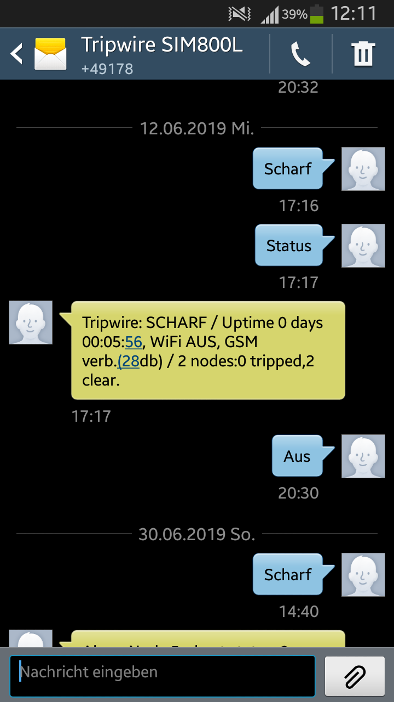
Steuerung der Basisstation über die serielle Schnittstelle (Debug-Interface)#
Mit der Standard Firmware gibt das Wemos D1 Mini Modul über seine seriellen Pins Debug-Informationen aus. Standardmäßig ist der Serielle Port auf 115200 Baud eingestellt und kann z.B. mit dem in die Arduino IDE eingbauten seriellen Monitor mitgelesen werden.
Die serielle Schnittstelle verarbeitet auch eingehende Befehle und gibt darauf hin Antworten aus. Die Befehle sind die selben wie sie der Fernzugang per Mobiltelefon (SMS) verwendet. Lediglich die Antworten unterscheiden sich leicht, da, anders als bei SMS, die serielle Verbindung auch längere Antworten ohne Mehrkosten ausgeben kann.
Fehlersuche#
RX Base#
Beim Mobilfunk-Verbindungsaufbau macht der Buzzer Geräusche und die LED leuchtet erratisch
Die GSM-Antenne ist zu nah an der Elektronik. Versuchen sie eine andere, weiter von der Hauptplatine entfernte Position für die Antenne zu finden. Versuchen Sie auch einen anderen Aufstellungsort der RX Base Station, damit das GSM-Modem eine geringere Abstrahlleistung wählen kann.
TX Node#
Es tut sich überhaupt nichts. Keine der LEDs leuchtet.
Prüfen Sie ob das Batteriefach überhaupt eine Spannung ausgibt. Manchmal haeb einezelne Batteriekontakte im Batteriefach durch fertigungsbedingte Ungenauigkeiten keinen Kontakt und der Stromkreis ist unterbrochen. Nutzen Sie ein Multimeter an den Ausgangskontakten des Batteriefachs und bestätigen sie, dass bei eingeschaltetem Schalter eine Spannung anliegt.
Das Pro Mini startet, aber der PIR Sensor löst nicht aus
Nutzen Sie ein Multimeter und prüfen Sie, ob der Spannungsregler des PIR Moduls 5V Spannung bereitstellt. Wenn das Modul gemäß der Anleitung eingebaut wurde, befindet sich der Pluspol des Ausgangs im oberen Bereich des Moduls. Legen Sie einen Prüfkontakt dort an, und den Minuskontakt an einer der Masse-Lötstellen. Nutzen Sie dann einen Steckkontakt-Pin o.ä. um auch sicher zu stellen, dass Spannung an den drei Steckkontakten, in die das PIR-Modul eingesteckt wird, ankommt.
Nachdem der PIR-Sensor ausgelöst hat, löst er von alleine immer wieder aus
Stellen Sie die Empfindlichkeit des Sensors in eine mittlere Position. Sie scheinen ein "sensibles Exemplar" erhalten zu haben. Versuchen Sie diesen Sensor an einem der anderen TX Node aus ihrem Set - manchmal bringt "Durchtauschen" etwas. Wenn immer wieder nur dieser eine Sensor in diese Art Feedback-Schleife verfällt, tauschen Sie, wenn möglich, das Modul aus. Sie können bei uns einen Ersatz erhalten.
Technische Daten#
RX Base#
- Abmessungen, ca, ohne Antenne: 10cm x 7,5cm x 3cm (Breite x Tiefe x Höhe)
- Stromversorgung: Steckernetzteil, 5V 2A Gleichstrom (DC)
TX Node#
- Abmessungen, ca, ohne Antenne: 5cm x 7cm x 4cm (Breite x Tiefe x Höhe)
- Stromversorgung: Alkaline Batterien 3x AAA (2,7V - 4,5V)
Rechtliche Hinweise#
Diese Dokumentation sowie die Designs der Hard- und Software unterliegen dem Urheberrecht des DIY Home Security Projektes, einem Elektronikprojekt, dass angeboten und vertrieben wird von der Clipland GmbH.
Alle Materialien und das gesamte Produkt sind nur für den privaten, persönlichen und nicht-kommerziellen Gebrauch bestimmt.
Bitte lesen Sie die im Eingang dieser Anleitung aufgeführten Warnhinweise und Hinweise!
Veränderungen, Anpassungen und Kollaboration#
Dieser Baukasten richtet sich an Bastler und versteht sich als Beitrag zum Maker-Movement, einem Begriff, der das Hobby beschreibt, Dinge selbst zu konstruieren, zu bauen und zu verändern. Schon das Format des Baukastens birgt die Möglichkeit, dass der Aufbau dieses Produktes vermutlich zu immer leicht unterschiedlichen Ergebnissen führt. Die vorliegende Anleitung weist sie auf wichtige Details hin und gibt einen Aufbau vor. Und obwohl Sie frei entscheiden können, eigenmächtige Veränderungen oder Umbauten vorzunehmen, so akzeptieren Sie bitte, dass Änderungen, die nicht in diesem Handbuch beschrieben sind, als nicht bestimmungsgemäß gelten müssen und auf eigenen Gefahr geschehen.
Die Software zum Betrieb der aus dem Baukasten hervorgehenden Anlage wird Ihnen über die Kollaborationsplattform github zugänglich gemacht. Wir laden Sie ausdrücklich dazu ein, an der Weiterentwicklung und Verbesserung des Programmcodes wie auch der Hardware mitzuwirken. Die Software wie auch die Hardware (zumindest die Tripwire PCBs) sind open-source, können also von Ihnen eingesehen werden und kommentiert bzw. verändert werden. Weiter haben wir diese Komponenten unter eine Lizenz gestellt, die Ihnen das verändern, verbreiten, forken der Code-Repositorien, Kopieren der Dateien etc. gestattet. Allerdings ist die kommerzielle Nutzung dieser Komponenten oder Rechte nicht gestattet und die Komponenten dürfen in keiner Form, veränderter oder unverändert, von Ihnen kommerziell verwertet werden. Bitte lesen Sie zu den Details die Lizenzbestimmungen im vollen Wortlaut.
Haftungsausschluss#
Wir übernehmen keine Garantie für die Richtigkeit der Informationen, die sich auf technische Eigenschaften sowie die hier vorliegende Dokumentation beziehen. Das in dieser Dokumentation beschriebene Produkt, seine Komponenten und dessen Zubehör unterliegen einer ständigen Verbesserung und Weiterentwicklung. Aus diesem Grund behalten wir uns das Recht vor, Komponenten, Zubehör, technische Spezifikationen sowie die hier vorliegende Dokumentation des Produkts ohne vorherige Ankündigung jederzeit zu ändern.
Alterseinschränkung#
Dieses Produkt richtet sich an Jugendliche und Erwachsene. Es darf nicht an Personen unter 14 Jahren abgegeben werden.
Wenn sich Kinder in Ihrem Haushalt befinden, so sorgen sie bitte für eine sichere Verwahrung der Komponenten sowie der fertigen Aufbauten. Einzelteile sind z.T. sehr klein und könnten verschluckt werden! Die Inhaltsstoffe sind z.T giftig und bergen Gefahren! Auch mechanische Eigenschaften wie scharfe Kanten und spitze Enden bergen Gefahren! Stellen Sie bitte einen sorgsamen und verantwortungsvollen Umgang mit dem Produkt sicher.
Recycling#
Elektrische und elektronische Geräte sowie Komponenten dürfen nicht über den Hausmüll entsorgt werden!
Entsorgen Sie das Produkt am Ende seiner Lebensdauer gemäß den geltenden gesetzlichen Vorschriften. Zur Rückgabe sind Sammelstellen eingerichtet worden, an denen Sie Elektrogerätekostenlos abgeben können. Ihre Kommune informiert Sie, wo sich solche Sammelstellen befinden.
Lizenzen#
Teile des Projektes werden Ihnen unter Lizenzen zur Verfügung gestellt, die im Bezug auf Weitergabe und Bearbeitung tolerant ("permissive") sind - eine kommerzielle Nutzung jedoch ausschließen. Wenn dies auch nicht im engeren Sinne der Definition von open source entspricht (vielmehr handelt sich dann um "shared source"), so ermöglicht es Ihnen jedoch als Privatperson ohne Gewinnerzielungsabsichten, an der Verbesserung oder Weiterentwicklung der Komponenten mitzuwirken.
Lizenz der Hardware#
Das Design der Leiterplatten sowie der Hardware in weiterem Sinne wird Ihnen unter der Creative Commons CC BY-NC-SA Lizenz zur Verfügung gestellt. Der Lizenztext findet sich in den jeweiligen Projektarchiven.
Lizenz der Software#
Die Software zum Betrieb der Basisstation und der Sensorknoten (Firmware, Sketches) wird Ihnen unter der GNU General Public License (GPLv3) zur Verfügung gestellt. Der Lizenztext sowie der Software-Quelltext findet sich in den jeweiligen Projektarchiven.
Lizenz der Dokumentation#
Diese Dokumentation wird Ihnen unter der Creative Commons CC BY-NC-SA 4.0 Lizenz zur Verfügung gestellt. Das bedeutet:
Sie dürfen:
- Teilen - das Material in jedwedem Format oder Medium vervielfältigen und weiterverbreiten
- Bearbeiten - das Material remixen, verändern und darauf aufbauen
Der Lizenzgeber kann diese Freiheiten nicht widerrufen solange Sie sich an die Lizenzbedingungen halten.
Unter folgenden Bedingungen:
-
Namensnennung - Sie müssen angemessene Urheber- und Rechteangaben machen, einen Link zur Lizenz beifügen und angeben, ob Änderungen vorgenommen wurden. Diese Angaben dürfen in jeder angemessenen Art und Weise gemacht werden, allerdings nicht so, dass der Eindruck entsteht, der Lizenzgeber unterstütze gerade Sie oder Ihre Nutzung besonders.
-
Nicht kommerziell — Sie dürfen das Material nicht für kommerzielle Zwecke nutzen.
-
Weitergabe unter gleichen Bedingungen — Wenn Sie das Material remixen, verändern oder anderweitig direkt darauf aufbauen, dürfen Sie Ihre Beiträge nur unter derselben Lizenz wie das Original verbreiten.
Keine weiteren Einschränkungen — Sie dürfen keine zusätzlichen Klauseln oder technische Verfahren einsetzen, die anderen rechtlich irgendetwas untersagen, was die Lizenz erlaubt.
Copyright#
Copyright 2019 Clipland GmbH. All rights reserved.